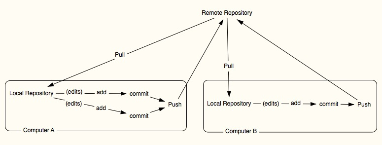

The ability to keep track of changes made by a creator over the course of a project's timeline is beneficial to many facets of production. This includes revision, editing, moving between drafts, and collecting and implementing feedback. Collaboration between individuals, whether locally or spatio-temporally distributed, requires greater scaffolding of communication and transmission of artefacts, such as facilitating concurrent access to the developing corpus of work, effectively managing how work and knowledge about the work-in-progress are shared, and enabling efficient movement between drafts and revisions. In the field of software engineering, version control systems (VCS) are employed by developers to mitigate these issues by storing code in digital archives called repositories, which also contain details about the history of the project, contributions, and other useful metrics (Bird et al. 1; Carlsson 2). VCS are not limited to the archiving and transmission of code. In the spirit of the important contribution of Diana Taylor's advocation for a convergence of Perfomance Studies and Latin American Studies scholarship towards "...a real engagement between two fields that helps us rethink both," (Taylor XVIII) this paper examines the potential that VCS may offer to research-creation in the context of theatre and performance studies. Drawing on distributed creativity, which extends "creative processes into the world of others, of objects ... [and of environments, and observes] how they unfold in time," (Glăveanu 23) a VCS has been used to write, document and analyze this paper's own socio-technical ontogenesis, or its "...coming into being." (Boesch 182)
Interest in the deployment of VCS in disparate contexts is gaining momentum. Those engaged in the field of computer-supported collaborative learning (CSCL) has taken up interest in studying the effects of integrating VCS in the classroom. For example, Francese, Gravino, Risi, Scanniello, and Tortora (2015) present on the experiences of students using VCS in a course on developing software for mobile platforms, and assert the importance of leveraging project-based learning in the classroom. (Francese et al 1) Zagalsky, Feliciano, Storey, Zhao, and Wang (2015) focus on the educational potential of the social networking features within the cloud-based VCS Github, towards supporting collaborative learning and group work. (Zagalsky et al 1)
Research into the implications of VCS in collaborative research and production are also on the rise, and can be found in such fields as computer-supported collaborative work (CSCW), and Human Factor in Computing Systems (CHI). Kalliamvakou, Damian, Singer, and German (2014) show how using Github in team-based software development contributes to emergent organized activity, and positively affects collaboration as defined by "...coordination, communication, awareness, task division, and conflict resolution." (Kalliamvakou et al. "The Code-Centric Collaboration Perspective" 1) Crowston and Howison (2005) conducted a study on patterns of communication in open source software projects hosted in the online community SourceForge to demonstrate that as projects grow in size, their social networks become progressivley more decentralized, while project components fracture into increasing modularity. (Crowston and Howison 1)
Another area of research that has grown with the usage of VCS, including in such contexts as those mentioned above, is that of mining software repositories (MSR). MSR is a practice used by researchers to conduct both quantitative and qualitative analyses on repositories. Burlet and Hindle (2015) mined repositories belonging specifically to computer musicians who use visual programming language Max/MSP , finding that "...in comparison to the general population of software developers, computer musicians' repositories have less commits, less frequent commits, more commits on weekends, yet similar numbers of bug reports and similar numbers of contributing authors." (Burlet and Hindle 292) By focusing on the code contained within a repository, researchers can infer how ideas develop and propagate. Using an analysis method called clone detection, Burlet and Hindle (2015) found that "...the vast majority of code [within these repositories] can be reconstructed from duplicate fragments," (Burlet and Hindle 293) indicating that computer musicians as designers of their own instruments frequently replicate sections of their code. This would be consistent with the design of any instrument that contains more than one -- or variations -- of the same component, such as the strings of a guitar.
Concerned also with the study of populations of users who participate in the use of VCS, MSR can provide researchers with insights such as: the co-evolution of a project's artefacts and its contributor base; how these systems augment collective work processes; and how workflows emerge and adapt to project goals. Vasilescu, Serebrenik, and Filkov (2015) used MSR to produce a "...large data set of social diversity attributes of programmers in GITHUB [sic] teams... [culled from] 23,493 GITHUB projects." (Vasilescu et al. 1) Bird, Pattison, D'Souza, Filkov, and Devanbu (2008) analyzed archived communications within mailing lists of three open source software projects, detailing "...emergent social structure and its relationship to technical activities." (Bird et al. 2)
VCS are tasked with storing and transferring current and past versions of work in digital archives referred to as repositories. In contemporary VCS, repositories are hosted in the cloud. Centralized version control (CVC) systems, such as Subversion and Concurrent Versioning System, have a client-server topology, where the repository is hosted on "...a single central server ... and developers 'check out' a limited view of this data onto the machines where they work." (O'Sullivan 1) The term 'check out' is a technical term in CVC, but also serves as an analogy in that the process of checking out code could be conceived similarly to borrowing a library book: the book is local to a specific library, and one must return it after a certain length of time. Decentralized version control (DVC), by contrast, is an example of a distributed approach to VCS, and operates on a peer-to-peer model, enabling the entire repository to be stored locally on all machines affiliated with the project. (O’Sullivan 2) This facilitates temporally and geographically displaced contributions, offline work, and simultaneous document editing. (Kalliamvakou et al. "The Code-Centric Collaboration Perspective" 1)
A popular DVC is git, which is run within a computer's command line interface, such as the terminal in Unix-based operating systems like Mac OS X and Linux. The workflow used to write this paper with git can be distilled to five terminal commands: git status, git pull, git add, git commit, and git push, where:
git status reports the state of the local repository in comparison to the most recent commit
git add [filename] tells git to track a file with the specified filename. An alternate command -- and one used quite frequently throughout the composition of this paper was git add ., which tells git to track all recently modified, added, or deleted files
git commit is the logging of the modification of work from the local repository to what is referred to as the staging area. A commit also contains a description of the change and reason(s) for its occurrence, written by the author of the change. An author can -- and typically does -- make multiple commits over the course of a work session
git push uploads the commit(s) from the local repository to the remote
git pull is the retrieval of the most-recent version of the master repository from the cloud to a local repository on the author's machine

The commit message can be considered as an extended creation practice and method of documentation. To illustrate this, the following two commits detail the development of this very sentence:
Author: michaelpalumbo emailmichaelpalumbo@gmail.com
Date: Sun Apr 30 15:18:34 2017 -0400
added sentence referred to in the paragraph about using git for the writing of this very paper. also added a folder about formatting, thinking that I may submit the paper to the PUBLIC journal CFP June 1, 2017. http://www.publicjournal.ca/submissions/most-recent-call/
Author: michaelpalumbo emailmichaelpalumbo@gmail.com
Date: Sun Apr 30 15:22:09 2017 -0400
add the url to the github.io page and also added two commits that have relation to one another in that a papragraph in the paper references them as an example of two snapshots of archiving the development of itself.
Built on top of git is Github.com, the most prominent service offering a DVC platform. As of late 2016, Github.com is host to over 21 million publicly available repositories in the cloud. Github was chosen as the DVC for this project because its wide adoption by other scholars, developers, and educators, indicating its potential as a social network. (Kalliamvakou et al. "The Promises and Perils of Mining Github" 1; Bird et al. 1)
Git's archiving system is designed to perform best with text-based data, which does does not preclude its use beyond the indexing of code, making it of potential interest to those who do not posess programming skills. All forms of digital data may be archived and tracked, including those used often in writing, research, and the arts, such as .docx, .xls, .txt, .jpeg, .mp3, etc.
As a social network based on collective production in an open and accessible corpus of works -- and works-in-progress -- Github facilitates unprecedented knowledge-sharing and mass collaboration, and affords researchers access to rich datasets, about which insights can be gained over the interdependence of creators and artefacts; how these entities interact over the lifecycle of a project; and how ideas propagate, which is defined by Aragon and Williams as 'creative resonance':
In our previous work with distributed creative groups [5], we have repeatedly observed a phenomenon akin to the physical behavior of resonance, or driven harmonic motion, where key ideas begin small and grow and are elaborated over time. We hypothesize that, as in physics — where for an impulse to be amplified and for the system to oscillate at the resonant frequency, the system must easily be able to store and transfer energy between two or more different modes (e.g. A pendulum and the case of kinetic and potential energy)—the same phenomenon can be observed as creative ideation flourishes across a distributed group. We term this process creative resonance. (Aragon and Williams 5)
The ability to freely contribute to research, creation, and research-creation repositories and concurrently analyze their content and social structure both quantitatively -- i.e. usage metrics, pattern recognition on the contents of the docs, etc -- and qualitatively -- i.e. ethnographic study of the commit messages, grounded theory analysis of issue or bug messages, etc -- is perhaps of particular interest to performance studies. This is significant in that the author has in past solo endeavours opted to work in long sprints of activity between documentation. What documentation does emerge from these processes is at most frequent made in haste following the end of a session. This coarse degree of resolution has, at times, hindered future efforts to speculate on decisions made, and to imagine recourse for ongoing work. Further, it has been the experience of this author that such an opaque visibility of the decision-making in a creative work impedes its opening up to future collaboration.
With the use of a public repository, creators open their work to early review and evaluation by others in contexts that may differ from their own. In git, a user can copy a repository belonging to another through an action called forking. Forking facilitates two essential workflows in the social network of git: one can alter the copied repository and propose these modifications to the intial project owner; or they can use this copy as either the starting point -- or introducing it in tandem with -- their own project, thereby embracing a project-based learning approach. Forking a repository generates a connection between one user and another, thereby expanding or strengthening community structure. (Bird et al. 2) Following a distributed creativity view of cultural production,
Creative action does not end with producing a certain outcome but requires, as an integral part, the social validation of the result, its appreciation by other people, primarily experts or gatekeepers (constituting the field) within art, science, technology, etc. (constituting the domain). In this sense the production of what is creative is distributed both between people and across time. (Glăveanu 25)
Participation in the social network of a VCS embraces communalism, (Crowston et al 7:2) and is consistent with Harvie's notion of craftmanship, where "...craftmanship in contemporary art and performance practices [are considered] to explore how it might help value art, labour and quality not for their financial profit, but rather for their own sakes, and, in so doing, how it might offer a model of production marked not by individual self-interest but by social interdependence and egalitarianism." (Harvie 109)
Following an action-oriented ontology (Leman 92) and distributed creativity, the acts of committing one’s work to, and pulling select work from, a repository, may be taken as segmentations of overall continuous work into discrete representations of an embodied practice.
It is precisely distribution in time that resolves the tension between stability and change. Only when we operate with a static, a-temporal perspective are we able to isolate single segments within the uninterrupted flow of action and development, and evaluate them as either continuous with what came before or marking a rupture or discontinuity. In reality, ruptures are continuous with the past and continuity is achieved through change and transformation. This conclusion emerges, however, only when we add time to our view of creative action and, more than this, when we are able to operate developmentally, with multiple time frames. (Glăveanu 72)
following Victor Turner's definition of performance through the "French etymological root, parfournir," (Taylor 3) [then Taylor cites Turner with to 'carry out thoroughly'] The carrying out thoroughly would seem consistent with the mantra of open source software design of commit early and often, which deems peer-review of code as essential towards building and maintaining useful and functioning codebases. [need to cite this]
In addition to being paired with an author's comment about its purpose, a commit is also tagged with such metadata as date and time, file, and how the respective files change since their last commit. Considering a commit as a representation of segmented overall work may problematize the formalization of a concrete temporal unit of work, since commit practices vary greatly from person to person. In their study of computer musicians, Burlet and Hindle found that
...in comparison to the general population of software developers, computer musicians' repositories [on GitHub] have less commits, less frequent commits, more commits on the weekend, yet similar numbers of bug reports and contributing authors. These differences are attributed to the cultural differences in sharing intellectual property or the lack of education surrounding the merits or use of version control systems. (Burlet and Hindle 301)
As a corollary of using git as a tool for archiving, revision, and analysis in research-creation practices beyond software development, the source material, drafts, content, and revision history of this paper as a work-in-progress have been mediated through a public repository on git, available here. This section details several analyses of the commit history and other activity in the repository over the course of its ontogenesis.
The directory structure of this repository contains the following folders: docs, drafts, formatting, ideas, mining, proposal, reports, research, and sections. At the outset, the intention was to develop parts of the paper in the sections folder to allow for a more modular analysis of the paper's construction. Using the MSR visualization tool Gource, (Caudwell 2009) the repository's evolving structure is demonstrated in the following animation:
This animation shows that attentional focus at the outset was spread across the entire repository, as contents of each of the folders required roughly the same amount of activity. At a midway point in the process, when it was decided that the paper would be written as a webpage using HTML and written using a text editor instead of in a word processor, there was a shift in locus towards the docs folder, which contains the resources for the website, particularly the file named index.html, which contains all of the text and formatting of the paper. The commit history provides more detail about this trajectory, indicating that as the paper grew in content and shape, the author progressively spent more time developing constituent sections and ideas within this single document.
A habit developed early on in the process of writing this paper, that saw commit messages as becoming a secondary locus for reflection about the content of the changed documents, writing in dialog with the ideas expressed in the commit, such as this commit, which began as a note about missing some content from the course, and led to some musing on possible sources and ideas to fold into further discussion.
This development is comparable to the concept of the mental model rubber duck debugging, where one describes an idea to a rubber duck, or some other "... inanimate [object] ... forcing the explainer to clarify and structure the explanation" (Phillips et al. 1) as a means of thinking reflexively about an idea.
This emergent extension of the commit message towards generative dialog with past and future selves is contrasted by a self-conscious tendency early on in the process of this work, where the author was concerned with the implications of an audience having access to early ideations regarding the texts discussed in the course. In the commit message provided below, the author performs as having a slightly higher confidence and level of intelligence about resources than in reality:
added note that what is missing from this proposal is an intigration … …of the theory from the class. ie Andy Lavender- performance in the twenty-first century see perhaps blurring between performer and spectator and awareness of being both. archive and the repertoire and GITHUB? possible thinking through post-postmodernism as a 'return to praxis, materiality, getting things done' (someone in class...) but also copresence see:colocation. what is mackenzie's formulation of technical performance? engagement isn't just about affect, its about temporality, the nowness of being connected. ALSO Bay-Cheng article how the traces are different fromt the original. as lavender also writes about the diff between gen x and y that y knows they're being watched, this also feeds into github being a social network with profiles. I get satisfaction from seeing my commit frequency displayed on my front page. see also EJ Westlake. possible harvie, see page 26 and 30, then page 109 on craftmanship driven by quality of work (https://github.com/michaelpalumbo/self-referent/commit/56de6878cf)
Taylor asserts that for some "...the constructedness of performance signals its artificiality -- it is 'put on,' antithetical to the 'real' and 'true.'" (Taylor 4) This tendency towards a performance of intelligence when by an author who is knowingly contributing a "...human-centered recording of personal experience," (Mann 621)
is an inverted form of surveillance, called sousveillance. (ibid)In The Archive and The Repertoire Taylor states that "...humans do not simply adapt to systems. They [also] shape them." This paper presented a vision towards the use of version control systems for research-creation work as complex and performable archives, and for their potentials as social networks, capable of demonstrating what Harvie describes as an interdependence in craftmanship (Harvie 109) while also supporting a distributed creativity emphasis on the "...dynamic co-evolution between person and environment." (Glăveanu 73) In closing, a conceit of this paper was to leverage the VCS git as a means of documenting the work-in-progress, as well as indexing the author's sentiments in commit messages, which scaffolded a form of dialog between the author, the paper in situ of the text editor, and the repository. A commit message, as a segmentation of continuous work, therefore extended cognition from the text editor to the public archive, which as a creative act "...generate[s] an outcome that has a certain form of materiality without necessarily being an object but also a process, a performance, etc." (Glăveanu 23)
Andrew Caudwell. Gource. ACM, 2 Penn Plaza, Suite 701, New York, NY 10121-0701, USA: N.p., 2010. Print. Proceedings of the ACM international conference companion / Object oriented programming systems languages and applications companion (OOPSLA ’10).
Aragon, Cecilia R, and Alison Williams. “Collaborative Creativity: A Complex Systems Model with Distributed Affect.” ACM, 2011. 1875–1884. Print.
Bird C. et al. “Latent Social Structure in Open Source Projects.” Proc ACM SIGSOFT Symp Found Software Eng Proceedings of the ACM SIGSOFT Symposium on the Foundations of Software Engineering (2008): 24–35. Print.
Boesch, Ernst Eduard. “The Sound of the Violin.” Discovering cultural psychology : a profile and selected readings of Ernest E. Boesch (2007): n. pag. Print.
Burlet, Gregory, and Abram Hindle. “An Empirical Study of End-User Programmers in the Computer Music Community.” IEEE Press, 2015. 292–302. Print.
Carlsson, Emil. “Mining Git Repositories: An Introduction to Repository Mining.” (2013): n. pag. Print.
Crowston, K. et al. “Free/Libre Open-Source Software Development: What We Know and What We Do Not Know.” COMPUTING SURVEYS 44.2 (2012): Article 7. Print.
Crowston, Kevin, and James Howison. “The Social Structure of Free and Open Source Software Development.” First Monday 10.2 (2005): n. pag. Print.
Francese, Rita et al. “On the Experience of Using Git-Hub in the Context of an Academic Course for the Development of Apps for Smart Devices.” N.p., 2015. 292–299. Print.
Glăveanu, Vlad Petre. Distributed Creativity: Thinking Outside the Box of the Creative Individual. Springer, 2014. Print.
Harvie, Jen. “Fair Play: Art, Performance and Neoliberalism.” N.p., 2013. Print.
Kalliamvakou, Eirini et al. “The Code-Centric Collaboration Perspective: Evidence from Github.” The Code-Centric Collaboration Perspective: Evidence from Github, Technical Report DCS-352-IR, University of Victoria (2014): n. pag. Print.
Leman, Marc. Embodied Music Cognition and Mediation Technology. The MIT Press, 2007. Print.
Mann, Steve. “‘Sousveillance’: Inverse Surveillance in Multimedia Imaging.” Proceedings of the 12th Annual ACM International Conference on Multimedia. New York, NY, USA: ACM, 2004. 620–627. Web. MULTIMEDIA ’04.
O’Sullivan, Bryan. “Making Sense of Revision-Control Systems.” Commun. ACM 52.9 (2009): 56–62. Web.
Phillips, R. et al. “Making Instructions for Others: Exploring Mental Models Through a Simple Exercise.” INTERACTIONS -NEW YORK- 20.5 (2013): 74. Print.
Taylor, Diana. The Archive and the Repertoire : Performing Cultural Memory in the Americas. Durham [u.a.]: Duke Univ. Press, 2007. Print.
Vasilescu, Bogdan, Alexander Serebrenik, and Vladimir Filkov. “A Data Set for Social Diversity Studies of GitHub Teams.” Proceedings of the 12th Working Conference on Mining Software Repositories. Piscataway, NJ, USA: IEEE Press, 2015. 514–517. Web. MSR ’15.
Zagalsky, Alexey et al. “The Emergence of Github as a Collaborative Platform for Education.” ACM, 2015. 1906–1917. Print.